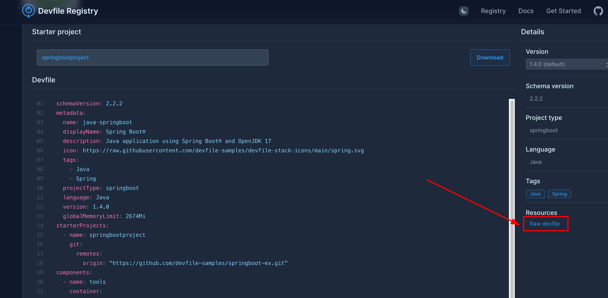
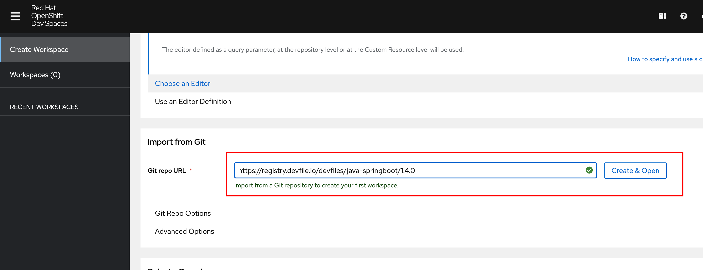
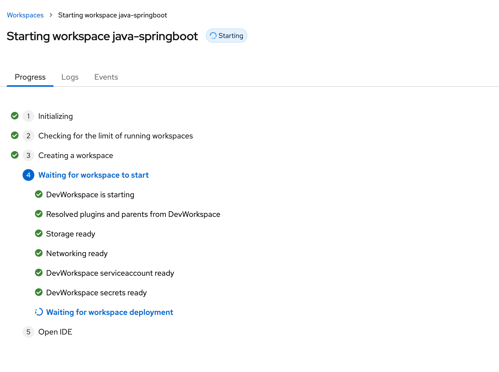
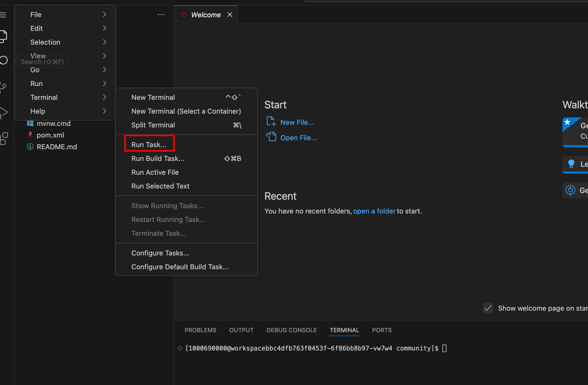
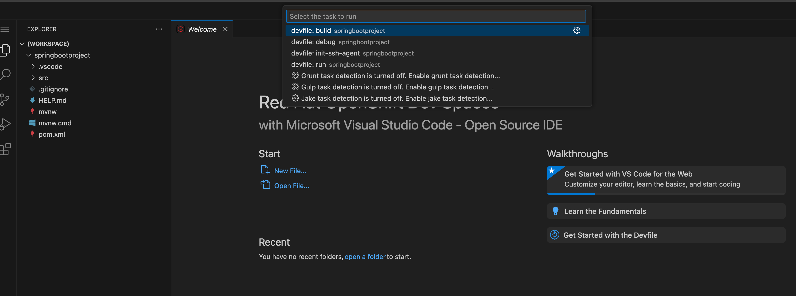

Devfile Registry
A Devfile Registry is a central repository or catalog that stores a collection of predefined Devfiles. These devfiles can be used by developers to quickly create and configure consistent development environments for various applications, frameworks, and programming languages.
The registry is often hosted as a service, which can be publicly accessible (https://registry.devfile.io/) or private (self-hosted). The registry server provides access to the available devfiles and facilitates their discovery and retrieval.
An example of a widely used devfile registry is https://registry.devfile.io. It offers a variety of predefined devfiles for languages like Python, Java, Node.js, Quarkus, and more.
A number of sample Devfiles for Dev Spaces are available at https://github.com/devspaces-samples. You can explore and customize these samples to your needs.
| Dev Spaces deploys its own internal registry that contains the Devfiles for the "getting started sample" applications. Adding your own devfiles to the internal registry is covered in the Customizing Samples in the Dashboard section. |
| You can create and run your own customized devfile registry outside the cluster. The process to do so is outside the scope of this course. Consult the README file at https://github.com/devfile/registry for details. |
Lab: Creating a Workspace from the Community Devfile Registry
In this hands-on lab, you will browse the public community Devfile catalog and create a workspace from it.
-
Using a browser, navigate to https://devfile.io. Search for a
Spring Bootapplication. For example, one of the results isSpring Boot using Javaat https://registry.devfile.io/viewer/devfiles/community/java-springboot. Open this item. -
Click on
Raw devfilein the right sidebar (belowResources). Copy the resulting URL. It defines a devfile for a basic Spring Boot application.Figure 2. Raw Devfile Link for a Spring Boot Application -
Log in to the Dev Spaces dashboard as
user1. -
Paste the URL for the Spring Boot devfile URL in the
Git repo URLfield and clickCreate & Opento launch a new workspace.Figure 3. Launch a Spring Boot Application -
Wait for a few minutes while the workspace is created.
Figure 4. Workspace Starting -
Once the workspace loads, you should see the source code the application in the left sidebar. Open the task menu by clicking
Terminal > Run Task….Figure 5. Devfile Tasks Menu -
Click
All Tasksin the dialog to view all the tasks defined in the devfile.Figure 6. All Tasks in Devfile -
Run the
devfile:runtask. This will launch a terminal and compile the application code, followed by starting the Spring Boot application. It may take a few minutes to download the dependencies of the application. When it finishes, you should see a prompt in the lower right corner asking you to allow traffic into port8080. ClickYes, followed byOpen in New Tabfor port8080to view the application output. -
Press
Ctrl + Cto stop the application and return to the terminal.